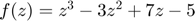

Визуализация Областей Притяжения Корней
Contents
Определение Функции и Её Производной
Данный раздел кода определяет кубический полином f(z) и его производную df(z). Формула полинома: 
f = @(z) z.^3 - 3*z.^2 + 7*z - 5;
df = @(z) 3*z.^2 - 6*z + 7;
true_roots = [1, 1+2i, 1-2i]; % корни полинома [1 -3 7 -5]
Создание Сетки
Создается сетка комплексных чисел z в области [-1, 3] x [-2.5, 2.5] с 501 точкой в каждом измерении. Эта сетка представляет начальные приближения для метода Ньютона-Рафсона.
[x, y] = meshgrid(linspace(-1, 3, 501), linspace(-2.5, 2.5, 501)); z = x + 1i*y; z = z(:);
Применение Метода Ньютона-Рафсона
Метод Ньютона-Рафсона применяется к каждой точке в сетке с использованием функции newton_method. Если метод не сходится, то соответствующему элементу в z_root присваивается NaN.
z_root = zeros(length(z), 1); for k = 1 : length(z) try z_root(k) = newton_method_gpt(f, df, z(k)); catch z_root(k) = NaN; end end
Назначение Цветов Областям Притяжения
Различным цветам назначаются точки сетки в зависимости от того, к какому корню они сходятся. Матрица color_mat используется для хранения RGB-значений для каждой точки.
color_mat = zeros(length(z), 3);% Черный (по умолчанию) color_set = [0, 0.4470, 0.7410; % Синий Matlab 0.8500, 0.3250, 0.0980; % Красный Matlab 0.9290, 0.6940, 0.1250]; % Желтый Matlab for k = 1 : length(true_roots) ind = abs(z_root - true_roots(k)) < 1e-4; color_mat(ind, :) = repmat(color_set(k, :), sum(ind), 1); end
Построение Графика Областей Притяжения
Создается график областей притяжения с использованием различных цветов. Истинные корни полинома также отмечаются на графике черными маркерами 'x'.
figure(1); scatter(real(z), imag(z),[], color_mat, '.'); hold on; plot(real(true_roots), imag(true_roots), 'kx', 'MarkerSize', 10); hold off; xlabel('\Re(z)'); ylabel('\Im(z)'); title('Области притяжения для f(z) = z^3 - 3z^2 + 7z - 5');